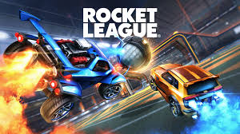
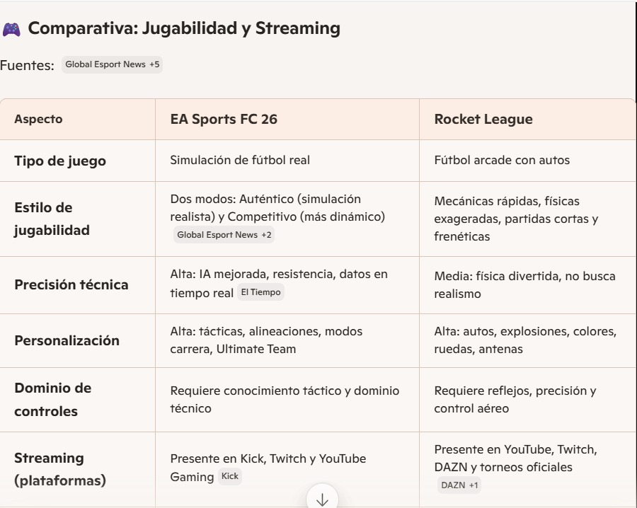
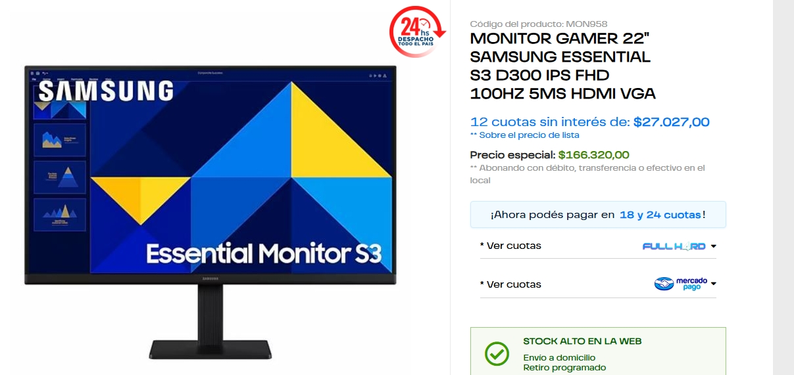

Carátula del Trabajo.
• Universidad: Universidad Autónoma de Entre Ríos
• Facultad: Facultad de Ciencias y Tecnologías
• Carrera: Licenciatura en Sistemas de Información
• Cátedra: Fundamentos de Computación
• Trabajo Práctico: Trabajo Práctico N°1 “Streaming de videojuegos”
• Profesores: Bioing. Ismael Cassi ; Lic. Paolo Orundés Cardinali
• Integrantes del Grupo: Brunelli Julián; Gutierrez Santos; Valenti Jerónimo.
• Comisión: 4
• Fecha de Entrega: 31 de Octubre
• Año Lectivo: 2025
JUEGO ELEGIDO: EA Sports FC 26
El FC 26 es un simulador de fùtbol muy popular a nivel mundial, con millones de usuarios. Es la continuación de la saga "FIFA", siendo esta la entrega mas reciente ya que sale a la venta recién este viernes 26 de septiembre.
Su género es "Simulador deportivo", puede jugarse en varias plataformas (pc, PlayStation, Xbox, Nintendo), y tiene varios modos de juego, ya sea individual o multijugador grupal, lo que permite jugar partidos contra la ia o entre amigos, o multijugador global, que permite jugar partidos contra personas de todo el mundo.
También cuenta con un modo carrera, en el que puedes tener la carrera de un director técnico o jugador, y el modo Ultimate team, que es un modo competitivo online en donde armas tu equipo y compites contra otras personas.
REQUERIMIENTOS MÍNIMOS y RECOMENDADOS:
Requerimientos mínimos y recomendados según Steam
Requerimiento mínimo según IA Copilot Requerimiento recomendado segun IA Copilot

Requerimientos mínimos y recomendados según ChatGPT
Para correr EA Sports FC 26 en la pc, se debe contar con un sistema operativo moderno de 64 bits, como Windows 10 u 11, actualizado a su última versión. En cuanto al procesador, se recomienda uno de gama media con múltiples núcleos, capaz de manejar tareas simultáneas como el juego y otras aplicaciones en segundo plano. Para los requisitos mínimos, alcanza con un procesador básico de cuatro núcleos, mientras que para un rendimiento óptimo en 1080p, lo ideal es uno de seis u ocho núcleos con buen rendimiento por hilo.
Respecto a la memoria RAM, el juego requiere al menos 8 GB para funcionar correctamente, aunque se recomienda tener 12 GB o más para evitar saturaciones, especialmente si pensás transmitir o grabar mientras jugás. En cuanto a la tarjeta gráfica, se necesita una placa dedicada con al menos 4 GB de memoria de video para jugar en calidad baja o media, mientras que para calidad alta o ultra en Full HD, lo ideal es una GPU de gama media con 6 GB o más de VRAM.
También es importante contar con al menos 100 GB de espacio libre en disco, preferentemente en una unidad de estado sólido (SSD), para asegurar tiempos de carga rápidos y fluidez general. Finalmente, una conexión a internet estable es esencial para los modos en línea y para mantener el juego actualizado.
NECESIDADES ADICIONALES PARA TRANSMISION:
Internet: Es fundamental tener una velocidad de subida mínima de 6 Mbps para transmitir en 1080p a 60 FPS. Si querés mayor calidad o transmitir en 2K, lo ideal sería tener 10 Mbps o más. Además, usá conexión por cable en lugar de Wi-Fi para evitar cortes o fluctuaciones.

Software de transmisión: El más recomendado es OBS Studio, gratuito y compatible con Windows. Permite usar codificación por hardware (NVENC si tenés GPU NVIDIA), lo que libera al procesador y mejora el rendimiento.

Configuración del stream: La resolución a 1920x1080 con una tasa de cuadros de 60 FPS, y activar el modo de prioridad alta en el proceso de OBS para evitar caídas de rendimiento.

OTRAS ESPECIFICACIONES:


Nosotros optamos por usar, en general, un porcesador amd, ya que es mejor a la hora de realizar multiples tareas, como por ejemplo gaiming y streaming. Ademas tiene mayor compatibilidad con placas madres y otros componenetes que permiten que sea mas flexible a la hora de armar la pc y actualizarla.
ESPECIFICACIONES TECNICAS

Estos son algunos de los terminos que necesitamos aprender a la hora de armar nuestra pc.
¿Qué es la cpu?: es algo asi como el cerebro de la computadora, es la unidad que interpreta y ejecuta las tareas que debe realizar la PC. En pocas palabras coordina tareas y toma desiciones lógicas.
Tiene varios componentes claves, tales como núcleos, hilos, cache o frecuencia.
¿Qué es la gpu?: se encarga de mostrar todo lo que se ve en pantalla, osea recibe los datos de lo que quiere mostrar, los procesa y dibuja en pantalla.
Hay dos tipos de gpu, puede ser integrada o dedicada.
Para las tareas que buscamos realizar nosotros, osea gaming y streaming, claramente una gpu dedicada es mejor, ya que mejora considerablemente la calidad de imágen.
¿Qué es el bitrate en streaming?: es -muy resumidamente- la calidad de video que uno ve en streams o videos.

¿Qué es la latencia?: es el tiempo que demora en ir y volver la información que nosotros le damos al sistema (por ej: presionar una tecla)

¿Qué son los hilos?: son algo asi como las manos de los nucleos, es decir que cuantos mas hilos tenga el nucleo mas tareas puede realizar.

¿Que son los núcleos?:

¿Qué es el caché?:


¿Qué es la frecuencia?:


IMAGENES DEL JUEGO:


OTROS JUEGOS EVALUADOS:
1) MINECRAFT:
Es un juego de construcción y aventura en un mundo abierto, donde los jugadores pueden explorar, recolectar recursos, construir estructuras y sobrevivir a criaturas. Tiene varios modos de juego, incluyendo supervivencia, creativo y multijugador. Es muy popular entre todas las edades debido a su jugabilidad sencilla pero profunda.

En resumen, son dos juegos completamente distintos, mientras que uno es un simulador de futbol, es otro es de supervivencia y construcción. El streaming de Minecraft es muy popular también, y bastante antiguo ya, además su público es muy amplio.

En cuanto a rendimiento, Minecraft utiliza muchísimos menos recursos que el Fc 26, por lo que no es necesario tener una pc demasiado potente para correrlo.
2) ROCKET LEAGUE:
Es un juego de deportes y acción que combina fútbol con vehículos propulsados por cohetes. Los jugadores controlan autos para golpear una pelota gigante y marcar goles en el campo del equipo contrario. Tiene modos de juego tanto individuales como multijugador, y es conocido por su jugabilidad rápida y competitiva.
El videojuego EA Sport FC26 busca ofrecer una una experiencia mas realista en el enfoque táctico, simulación y profesional, mientras que Rocket League propone un estilo arcade rápido y accesible , donde vehículos compiten en alto rendimiento, este juego destaca mas por su dinamismo. Ambos juegos destacan en el mundo del stream y del esport

En cuanto a rendimiento el FC26 exige mas recursos: una CPU mas moderna, mas RAM y mas espacio en el diso duro, mientras que el rocket es mas liviano, es mas accesibles para PCs de gama media o baja, y ambos necesitan conexión estbale para su jugabilidad online, aunque el FC26 se mas exigente.

Título de la imágen: "Objetivo de vida"
Explicación: para realizar esta imágen usamos chat gpt, y el mensaje que quisimos transmitir es como seria una vida sin preocupaciones ni problemas.
***********************************************************************************************************************************************************************************************************
PARTE DE JERONIMO:
En primer lugar elegi que la IA copilot me recomendara que elementos utilizar:


Tambien le pedi a la IA chat gpt que me recomiende componentes:

Luego de ver las recomendaciones esta es la pc que decidi armar:

Los presupuestos los saque de las siguientes paguinas https://insumaxcenter.com.ar/gamer es una paguina de la ciudad de parana, https://fullh4rd.com.ar/ es una tienda de argentina y https://bluetech.com.ar/productos/windows11/.
CPU:

TARJETA GRAFICA:
ALMACENAMIENTO:

PLACA BASE:
FUENTE DE PODER:

GABINETE:

REFRIGERACION:

WEBCAM:

MONITOR:
TECLADO Y MOUSE:
AURICULARES:
JOYSTIC PS4:

El presupuesto total de todo es de $1.510.183 pesos, que en el dia de hoy equivalen a 1000,21 dolares
¿Porque elegi estos componentes?
En el procesador elegi utilizar un ryzen 5600, ya que este tiene un buen rendimiento en los videojuegos y tiene la capacidad para realizar las tareas en simultaneo de manera rápida y equilibrada (discord, OBS) sin saturarse, existen mejores como el ryzen 7 pero este se desempeña muy bien en su trabajo. Para el procesador grafico elegi el RTX 3050 con 8 GB de VRAM esto me va a permitir stremear y jugar a 1080p, tiene acceso a tecnologías como DLSS que permiten sumar calidad visual sin perdidas de FPS. La RAM de 16GB DDR4 es buena para el uso del gaiming y del streaming, permite mantener el sistema ágil aun asi teniendo varias aplicaciones abiertas (discors, obs, etc) Para el almacenamiento elegi ponerle el SSD NVMe Gen4 de SanDisk, contiene una buena velocidad con 500MB/s de lectura, ayuda muchísimo en la reducción de los tiempos de carga, esto se nota en los juegos en el sistema operativo. La placa base es la B550 además de ser compatible con todos los elementos que elegi, me permitiría poder cambiar el procesador por uno mejor a futuro o agregar mas espacio. La fuente 650W me garantiza una buena eficiencia energética y protección contra picos de tensión, es unos de los puntos mas débiles, capaz mas a futuro se podría cambiar por uno mejor. Para el gabinete me decidí por el Eagle Warrior con 4 ventiladores ARGB logra una mejoría en el flujo de aire, va en sintonía con el watercooler que elegi de 360mm, esto va a poder permitir mantener la CPU en temperaturas optimas, la refrigeración liquida ayuda a la reducción del ruido, ideal para las lasrgas horas de streming. El monitor ViewSonic VX2428A con 180Hz da una buena respuesta en juegos de deporte, esto ayuda a mejorar la experiencia del juego. La webcam Logitech C920 es una cámara muy utilizada por los stremers. Brinda una buena calidad de imagen, tiene enfoque automatico, ayuda mucho a mantener una imagen clara y profesional. El teclado y mouse Thermaltake eSPORTS y los auriculares Aureox GH200 cumplen sus función, son cómodos y te permiten jugar y gracias al microfono de los Aureox permiten comunicarte sin problemas. El joystick garantiza una mejor experiencia para el juego FC26, donde el control es más cómodo y fácil de jugar que el teclado.